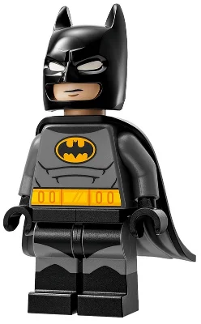
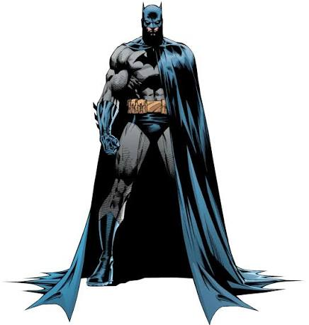
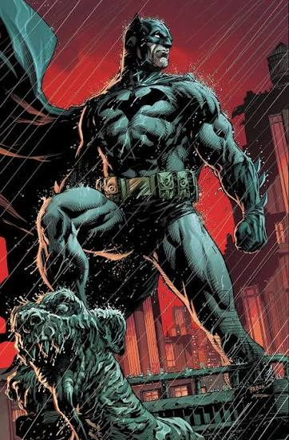

Quem deu a Bruyce Wayne o direito de julgar?
Bruyce Wayne é bilionário e herdeiro de uma das empresas mais poderosas de Gotham.
À noite, ele veste a máscara e decide, sozinho, quem é culpado e quem merece punição. Ninguém pediu isso a ele: Bruce simplesmente se deu o direito de fazer justiça com as próprias mãos.
Assinado: Coringa.